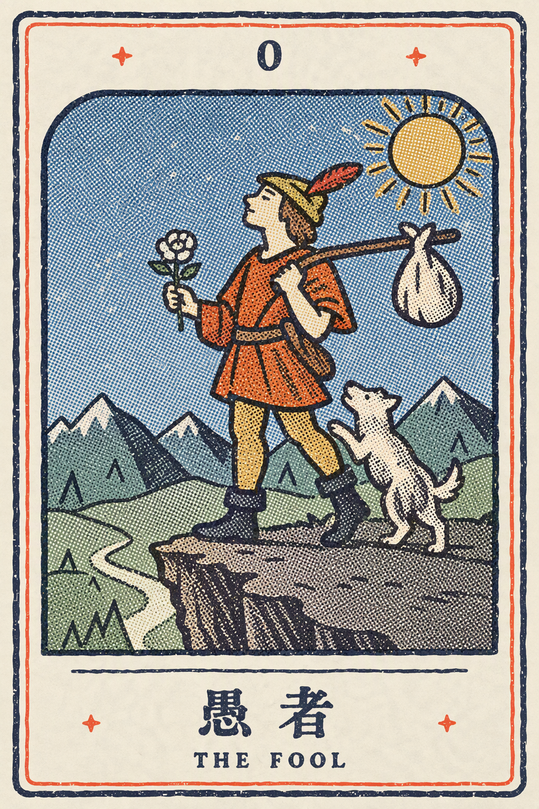

THE FOOL · RASTER INK / WEB PRINT
愚者 · 完整製作流程試樣
維持網站原有 3:5 比例。墨線母稿由線稿修整而來；區域上色、網點、印刷質感與牌框文字由程式合成。這是獨立試樣，尚未替換正式牌組。
正在製作各階段樣張…
局部：人物、手與木刻陰影
查看上色區域遮罩與製作限制
每一種顏色代表一個上色區域。遮罩由人工指定，封閉區域再依墨線校正；開放地景保留手工區域。影像生成可能改變局部細節，因此這份遮罩是本張專用，不能直接套用其他牌。
原始彩色效果參照
保留原檔，作為畫風與配色參考；尺寸為原先的 2:3，未拉伸成新版。
